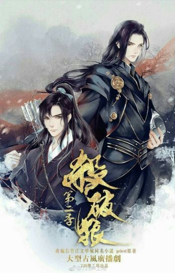
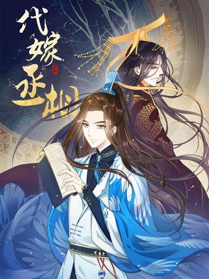

Хаски и его учитель-кот
Хаски и его учитель-кот
Мо Жань чувствовал, что выбрать Чу Ваньнина учителем было большой ошибкой.
По правде говоря, Уважаемый Учитель слишком уж похож на кота, а сам он – на постоянно крутящегося под ногами и виляющего хвостом глупого щенка.
Псы и коты относятся к разным видам и не могут быть вместе, и глупый пес изначально вовсе не планировал тянуть к коту свои мохнатые лапы.
Он нутром чуял, что раз уж родился собакой, то должен выбрать себе в пару другую собаку. Вот взять к примеру его старшего брата-наставника, похожего на прелестного шпица, вместе они составили бы идеальную пару.

Убить волка
В эпоху Великой Лян жизнь людей стала комфортнее благодаря паровым машинам, работающим на топливе под названием «цзылюцзинь». Чан Гэн, который провел всё детство в небольшом городке, имел не самые лучшие отношения с матерью, а отчим наведывался домой всего несколько раз в год. Его единственными друзьями были двое маленьких детей, учитель и его ифу — приемный отец. Но однажды его жизнь перевернулась с ног на голову. После вторжения варварских племен Чан Гэн узнал, что вся его жизнь, личность, мать, учитель и даже его любимый ифу — сплошная ложь.
 Система "Спаси-себя-сам" для главного злодея
Система "Спаси-себя-сам" для главного злодея
«С каких пор меня тошнит от гаремных романов?»
Литературный критик Шэнь Юань перерождается в одного из героев ненавистного романа - гнусного злодея Шэнь Цинцю.
Которому, само собой, суждено быть казненным главным героем с особой жестокостью.
«Не то чтобы я мечтал броситься на шею главному герою при чтении, но какого черта он ведет себя подобным образом? И с какой радости все романтические линии замыкаются на меня?»

Премьер-министр под прекрытием
Ради своей младшей сестры талантливый мужчина, переодевшись в женщину, проник во дворец, чтобы добиться благосклонности императора. Что он сделает, попав в его жестокий и опасный гарем? И какую историю он придумает для Императора и Премьер-Министра? Он не только должен бороться за свои права, но также влюбить в себя императора ради сестры. У него получится? И что же случится после того, как Император узнает правду?